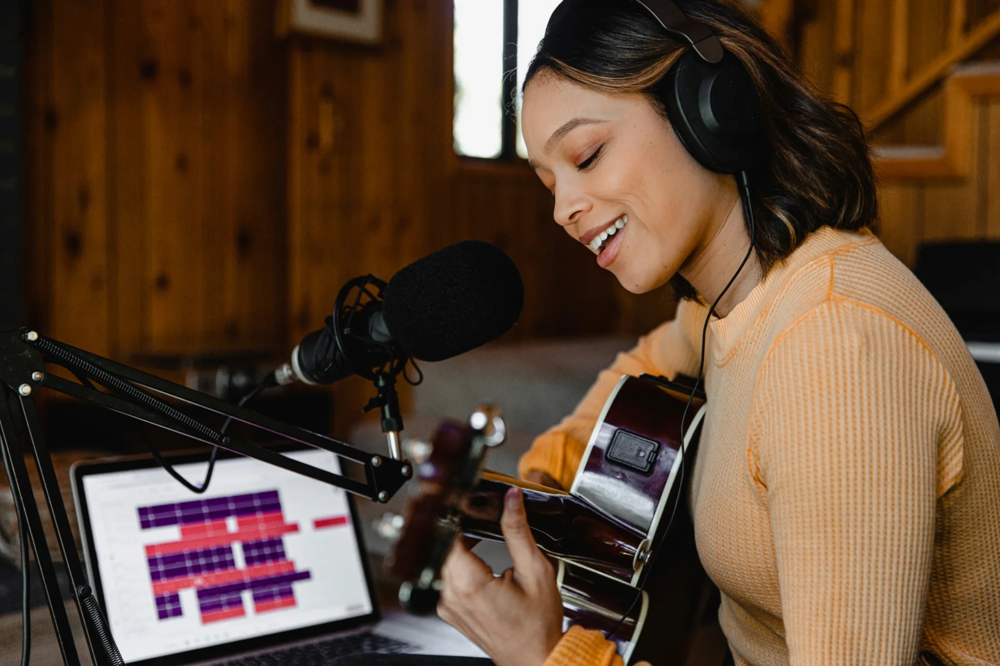

Shape the song
Develop melody, harmony, structure or lyrics where the song can become stronger and clearer.
Pro-Sessions · Singer-Songwriter · Worldwide · pro-sessions.com
You already have something worth building on — lyrics, a melody, chords, a voice memo or a simple guitar or piano demo. We help you develop it into a complete production built around your song, your voice and the feeling you want to create.

The heart of the project
A strong song can begin with very little — a lyric, a melody, a few chords and a voice. The right production can bring out the emotion, create movement and give each part of the song the space it deserves, while keeping the character that made it yours.
Develop melody, harmony, structure or lyrics where the song can become stronger and clearer.
Build the musical world around the vocal and the story — from intimate and organic to a full modern production.
Use dynamics, instrumentation and production detail to let verses, hooks and bridges each do their job.
Bring production, vocals, mixing and mastering together into one finished release.
Start where your song is now
You do not need to fit your project into a fixed package. Start with what you have and we can build the right process around it.
You have the lyrics, melody or an early song idea and want help developing it further before the production takes shape.
You have the song — perhaps as guitar/vocal, piano/vocal, voice memo or demo — and want to hear it become a complete production.
You have already started producing the song and want an experienced producer to help take it through the final stages.
The song decides the production. Some songs need only a few carefully chosen elements. Others want a larger arrangement. We recommend the approach that serves the music and agree the scope and price before work begins.
From song to record
The process can begin almost anywhere. What matters is the song, the direction and what you want the listener to feel when the production is finished.
The production serves the music
Every song has its own personality. Some come alive with voice, piano and a few carefully chosen details. Others want drums, bass, guitars, synths and a larger modern production. Some live somewhere between the two.
The arrangement is built around the emotion, melody, lyrics and voice — choosing the instruments, dynamics and production details that help the song communicate at its strongest.
Your voice at the centre
For a singer-songwriter, the vocal often carries both the story and the identity of the song. Production decisions are therefore made with the vocal in mind — from key and arrangement to dynamics, instrumentation, harmonies and space in the mix.
Practical remote guidance can cover recording levels, microphone placement, room setup, multiple takes, doubles, harmonies and file delivery.
You can record where you are while still having a producer involved in the process.
A direct studio relationship
Work directly with Fredrikstad Studio throughout the project. We listen to the song, your references and the direction you want to explore, then develop an approach around the music rather than choosing from a fixed production formula.
Simple from the first demo
A voice memo can be enough to begin. We first listen to the music and the direction, then recommend the right path for the project.
Send a voice memo, guitar/vocal, piano/vocal, demo, MP3 or private link — whatever represents the song best right now.
We listen to the song, what you want to achieve and the musical and production possibilities.
You receive a clear recommendation, what the production can include and a total project quote before work starts.
Arrangement, instrumentation and production are developed around the agreed direction, with communication along the way.
Vocals, final production, mixing and mastering bring everything together into the finished song.
Before you send it
You do not need a polished demo before getting in touch. The first review is about hearing the song and understanding where you want to take it.
Yes. A song can start very early in the writing process. Send what you have and describe what you imagine for it. We can look at songwriting, melody, harmony, arrangement and production together.
Yes. A simple phone recording can be enough for the initial project review. The purpose is to hear the song and understand the direction before deciding how to produce it.
Absolutely. A complete production does not have to mean a large production. Guitar, piano, bass, subtle percussion or a few carefully chosen elements can be enough when that serves the song best.
Yes. Singer-songwriter material can move naturally into contemporary pop, electronic or hybrid production while keeping the songwriting and vocal at the centre.
Yes. Songwriting support can include lyrics, melody/topline, harmony and song structure, depending on what the project needs.
Yes. We can provide practical guidance for remote vocal recording so you can capture clean, usable takes and send the files to the studio.
Send the current version. We can work with an existing production through additional instrumentation, production development, vocal work, mixing or mastering.
Yes. Projects can begin with one song and continue into several singles, an EP or a longer artist collaboration. Working together over time also gives us the opportunity to learn and develop your musical identity.
Start with the song
Your song can begin as a voice memo, lyrics and melody, guitar/vocal, piano/vocal or an existing demo. Tell us what you hear in the song and where you would like to take it.
Free initial project review. We listen first, recommend an approach and give you a clear project quote before production starts.
Thank you! Your enquiry has been sent.